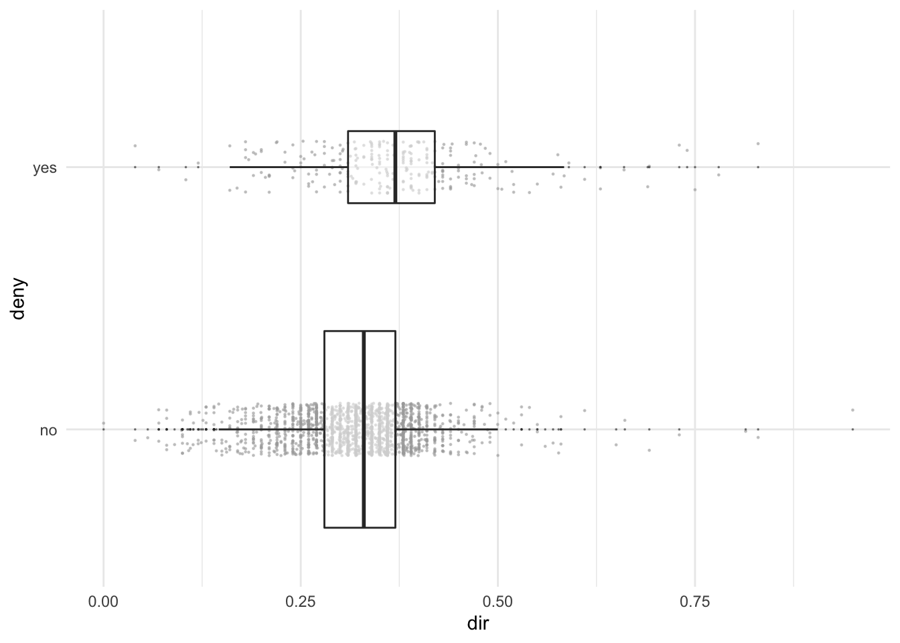
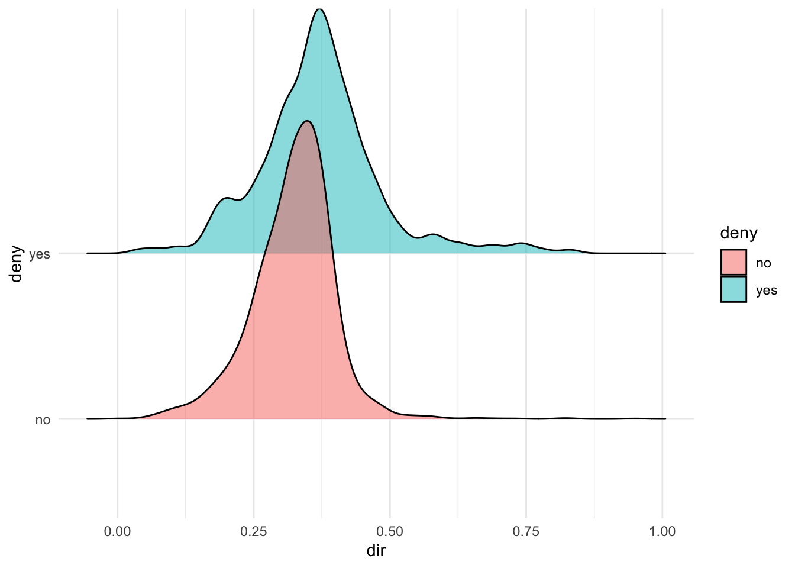
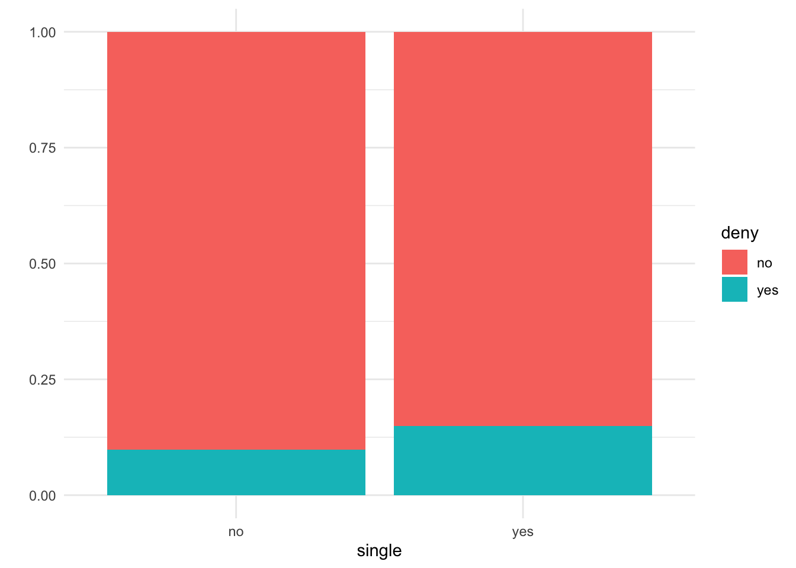
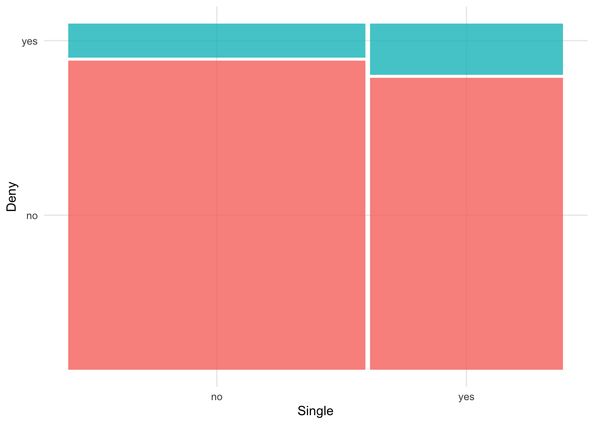
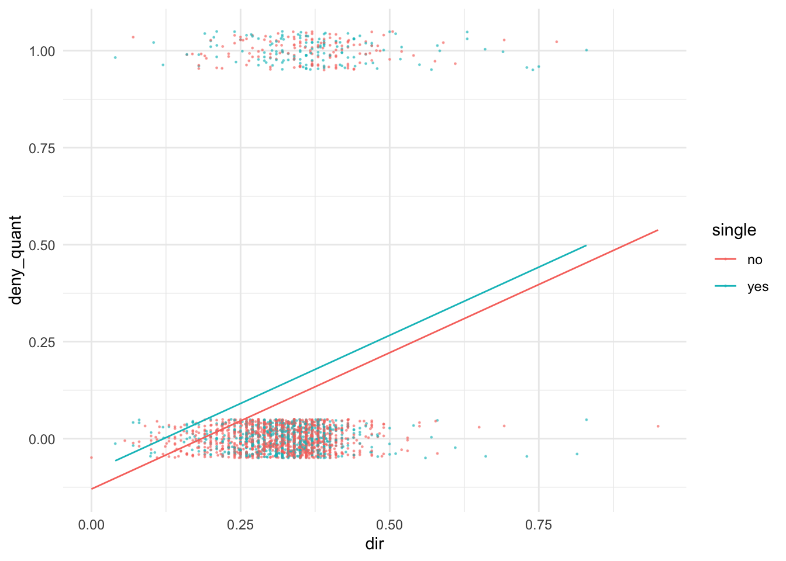
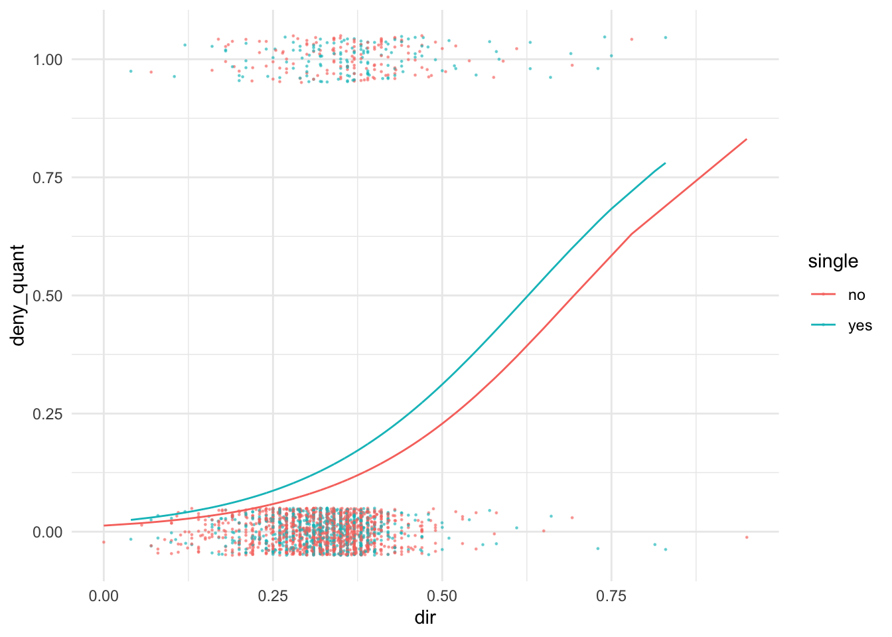

library(tidyverse) #for plotting and summarizing
library(ggridges) #for ridge plots
library(ggmosaic) #NEW! for mosaic plots
library(moderndive) #for nice model output
library(broom) #for nice model output
library(Ecdat) #for data
theme_set(theme_minimal()) #changes the theme of ggplots to theme_minimal, my personal favorite
GOAL:
By the end of these notes and activities, you should be able to perform the following tasks.
- Create appropriate plots to explore the relationship between categorical or quantitative predictors and a binary response.
- Know when a logistic regression model is appropriate.
- Fit a logistic regression model using
glm(). (Don’t forget family = binomial(link = "logit").)
- Interpret coefficients from a logistic regression model for both categorical and quantitative predictors.
- Find the predicted probability of “success” for a new observation.
- Plot the logistic model in simple cases.
So far all the modeling we have done in this course has used a quantitative response variable. Now, we are going to talk about how to model a different type of response variable, one with a binary response: yes/no, true/false, dead/alive, etc.
Before we start, I would like to take some time to discuss some real-life examples. Can you think of any places where this might be used?
To introduce this concept, we will use the Hmda dataset from the Ecdat library. It contains data on mortgage application denials in Boston. The data are from 1997-98. You can learn more about the data by typing Hmda into help or ?Hmda in the Console. The response variable is called deny and is a yes if the applicant was denied, and a no otherwise.
We will filter out a couple outliers, so use Hmda2 from now on.
Hmda2 <-
Hmda %>%
filter(hir < 1, dir < 1, ) %>%
mutate(deny_quant = ifelse(deny == "yes", 1, 0))
Exploratory analysis
To examine relationships between quantitative variables and the binary response, deny, we can use boxplots along with scatterplots.
Hmda2 %>%
ggplot(aes(x = deny, y = dir)) +
geom_jitter(width = .1, size = .2, alpha = .5, color = "darkgray") +
geom_boxplot(outlier.size = 0,varwidth = TRUE, alpha = .5) +
coord_flip()

Or we could use ridge plots. There are other options, too. These are just some of my favorites.
Hmda2 %>%
ggplot(aes(x= dir, y = deny, fill = deny)) +
geom_density_ridges(alpha = .5)
## Picking joint bandwidth of 0.0185

ggplot(data=Hmda2) +
geom_bar(aes(x=single, fill=deny),
position = "fill") +
ylab("")

A mosaic plot is an even more informative graph than the one above. The widths reflect the proportion in each level of the x-axis variable, in this case single. This function is a bit tedious because you have to do some labeling on your own.
Hmda2 %>%
ggplot() +
geom_mosaic(aes(x = product(single),
fill = deny)) +
labs(x = "Single", y = "Deny") +
guides(fill = "none")

YOUR TURN!
Explore some other potential predictor variables on your own. Do any variables seem to be good predictors of deny?
Try to apply regular regression techniques … (BAD IDEA - DO NOT EVER DO THIS!)
Since we know how to model data with a quantitative response, we might think of turning the deny variable into a quantitative variable. I did that when I created Hmda2; deny_quant is a 1 if the applicant was denied and 0 otherwise.
Now, we could use this as our response variable in a linear model, same as we have been doing all semester. Let’s use dir and single as explanatory variables. Interpret each of the coefficients in the model below. Do you see an issue? (Hint, try predicting the response for non-single applicants with low debt payments to total income ratio, dir).
lm_deny_WRONG <- lm(deny_quant ~ dir + single, data = Hmda2)
tidy(lm_deny_WRONG)
It might also help to look at the plot.
augment(lm_deny_WRONG) %>%
ggplot(aes(x=dir, y=deny_quant, color=single)) +
geom_jitter(height = .05, size = .2, alpha = .5) +
geom_line(aes(y = .fitted))

How do we solve this problem? We want to guarantee that the model values are between 0 and 1. We are going to use something called a link function. We can think about this in two steps:
Fit a linear model the way we are used to, adding terms times their coefficients. (Note that the method isn’t exactly the same … I’ll talk about that later). Call this output y. This value is not a probability.
Use a link function to translate the value y to a scale between 0 and 1, p (which stands for probability). The function that will be used is called the “logit link” or the logistic transformation and it is defined as
\[
p = \frac{e^y}{(1 + e^y)}
\]
Fitting the logistic regression model with glm()
Let’s investigate how to do this in R. We can use a function called glm() (generalized linear model) to fit this model. Before explaining how the model is fit, let’s fit it and talk about interpreting the coefficients and predicting new values.
glm_deny <- glm(deny ~ dir + single,
data = Hmda2,
family = binomial(link = "logit") #new!
)
#NOTE: get_regression_table() doesn't work for glm's
tidy(glm_deny)
Explanation
Remember, the value that comes out of the linear model portion is y and y is the result of a linear equation. So,
\[
\hat{y} = \hat{\beta}_0 + \hat{\beta}_1 x_1 +\hat{\beta}_2 x_2 + ... + \hat{\beta}_p x_p
\]
Let’s also solve for \(y\) in
\[
\hat{p} = \frac{e^{\hat{y}}}{(1 + e^{\hat{y}})},
\]
which, after a bit of math, gives: \[
\hat{y} = log\Big(\frac{\hat{p}}{1-\hat{p}}\Big)
\]
or \[
e^{\hat{y}} = \frac{\hat{p}}{1-\hat{p}}.
\]
Combining these, we have
\[
log\Big(\frac{\hat{p}}{1-\hat{p}}\Big) = \hat{\beta}_0 + \hat{\beta}_1 x_1 +\hat{\beta}_2 x_2 + ... + \hat{\beta}_p x_p
\]
or
\[
\frac{\hat{p}}{1-\hat{p}} = e^{\hat{\beta}_0}e^{\hat{\beta}_1x_1}e^{\hat{\beta}_2 x_2} \cdots e^{\hat{\beta}_p x_p}
\]
These equations give us nice ways to interpret the coefficients.
The quantity \(\frac{\hat{p}}{1-\hat{p}}\) is called the odds.
Tangent: What are odds?
Before we move on to interpreting the results of our models, let’s first make sure we have an understanding of odds.
Let x be some event (ie. getting a heads, winning the lottery, buying a shirt, passing this class, …). Then the odds of x, \(odds(x)\), is defined as:
\[
odds(x) = \frac{p(x)}{1 - p(x)},
\]
the probability of x divided by 1 minus the probability of x (which is the probability of of not x).
YOUR TURN!
- Assume the probability of flipping heads on a coin is .5. Find the odds of flipping a head.
- In a regular 52 card deck of cards, the odds of choosing a card that is hearts.
- If the probability of survival is \(p=.80\), what are the odds of survival?
- In the previous question, what are the log odds of survival?
- Is it easy to think about the log odds scale? Or even the odds scale?
Back to explanation
Recall the model we were just looking at. A also added a column of the exponentiated coefficients (\(e^{coefficient}\)).
tidy(glm_deny) %>%
select(term, estimate) %>%
mutate(exp_est = exp(estimate))
We should keep in mind:
- The coefficients that are in the output are on the
log(odds) scale - YUCK! We don’t usually want to interpret things on that scale.
- The exponentiated equation is multiplicative on the odds scale. That’s a better way to interpret our results
YOUR TURN!
Interpret/find the following:
- \(\hat{\beta}_0\), the intercept.
- \(e^{\hat{\beta}_0}\), the exponentiated intercept.
- \(\hat{\beta}_1\), the coefficient for
dir. Why might this be a useless interpretation? In what units might we want to interpret this?
- \(e^{\hat{\beta}_1}\).
- \(\hat{\beta}_2\),
- \(e^{\hat{\beta}_2}\) Hint: compare the odds of denial for single and non-single with the same
dir.
- The probability of a denied mortgage application for a single applicant who has a debt payments to total income ratio of .2.
- The probability of an accepted mortgage for a single applicant who has a debt payments to total income ratio of .2.
Prediction
We can use the augment() function to predict new values, similar to how we used it before. See augment.glm in the help for more details.
Let’s show how to do that using problem 7 from above. What is .fitted?
augment(glm_deny,
newdata = tibble(single = "yes", dir = .2))
Let’s put this in terms of probability:
augment(glm_deny,
newdata = tibble(single = "yes", dir = .2),
type.predict = "response")
Just like with linear regression, in simple cases, we can plot the model values (the probabilities). This is one of those cases. How does this plot look different from when we used linear regression to model deny?
augment(glm_deny,
data = Hmda2,
type.predict="response") %>%
#I need to plot deny as a 0/1
ggplot(aes(x=dir, y=deny_quant, color=single)) +
geom_jitter(height = .05, size = .2, alpha = .5) +
geom_line(aes(y = .fitted))

Fitting the model
We learned that linear models are fit by finding the coefficients that minimize the sum of the squared residuals. Coefficients in logistic regression maximize the likelihood function. In the case of logistic regression, the likelihood function is:
\[
\prod_{i=1}^n p_i^{y_i}(1-p_i)^{1-y_i}.
\]
This formula may look complicated but it’s not too bad.
The \(y_i\) is the observed value for the \(i^{th}\) observation. So, it is either 0 or 1.
Notice that when \(y_i = 1\),
\[
p_i^{y_i}(1-p_i)^{1-y_i} = p_i
\]
and when \(y_i = 0\),
\[
p_i^{y_i}(1-p_i)^{1-y_i} = 1 - p_i.
\]
So, this is just a product of either the predicted probabilities (for cases when \(y_i = 1\)) or one minus the predicted probabilities (for cases when \(y_i = 0\)).
The largest this value can be is \(1\), which would happen if all the 1’s had a predicted probability of 1 and all the 0’s would have a predicted probability of 0.
This will never happen in real life, but in general, a “good” model would be one where the 1’s have predicted probabilities that are close to 1 and 0’s have predicted probabilities that are close to 0.
LS0tCnRpdGxlOiAiTG9naXN0aWMgUmVncmVzc2lvbiIKb3V0cHV0OgogIGh0bWxfZG9jdW1lbnQ6CiAgICB0b2M6IHRydWUKICAgIHRvY19mbG9hdDogdHJ1ZQogICAgZGZfcHJpbnQ6IHBhZ2VkCiAgICBjb2RlX2Rvd25sb2FkOiB0cnVlCi0tLQoKYGBge3IsIG1lc3NhZ2U9RkFMU0UsIHdhcm5pbmc9RkFMU0V9CmxpYnJhcnkodGlkeXZlcnNlKSAjZm9yIHBsb3R0aW5nIGFuZCBzdW1tYXJpemluZwpsaWJyYXJ5KGdncmlkZ2VzKSAjZm9yIHJpZGdlIHBsb3RzCmxpYnJhcnkoZ2dtb3NhaWMpICNORVchIGZvciBtb3NhaWMgcGxvdHMKbGlicmFyeShtb2Rlcm5kaXZlKSAjZm9yIG5pY2UgbW9kZWwgb3V0cHV0CmxpYnJhcnkoYnJvb20pICNmb3IgbmljZSBtb2RlbCBvdXRwdXQgCmxpYnJhcnkoRWNkYXQpICNmb3IgZGF0YQp0aGVtZV9zZXQodGhlbWVfbWluaW1hbCgpKSAjY2hhbmdlcyB0aGUgdGhlbWUgb2YgZ2dwbG90cyB0byB0aGVtZV9taW5pbWFsLCBteSBwZXJzb25hbCBmYXZvcml0ZQpgYGAKCjxkaXYgY2xhc3M9ImFsZXJ0IGFsZXJ0LXN1Y2Nlc3MiPgogIDxzdHJvbmc+R09BTDo8L3N0cm9uZz4KCkJ5IHRoZSBlbmQgb2YgdGhlc2Ugbm90ZXMgYW5kIGFjdGl2aXRpZXMsIHlvdSBzaG91bGQgYmUgYWJsZSB0byBwZXJmb3JtIHRoZSBmb2xsb3dpbmcgdGFza3MuCgoqIENyZWF0ZSBhcHByb3ByaWF0ZSBwbG90cyB0byBleHBsb3JlIHRoZSByZWxhdGlvbnNoaXAgYmV0d2VlbiBjYXRlZ29yaWNhbCBvciBxdWFudGl0YXRpdmUgcHJlZGljdG9ycyBhbmQgYSBiaW5hcnkgcmVzcG9uc2UuICAKKiBLbm93IHdoZW4gYSBsb2dpc3RpYyByZWdyZXNzaW9uIG1vZGVsIGlzIGFwcHJvcHJpYXRlLiAgCiogRml0IGEgbG9naXN0aWMgcmVncmVzc2lvbiBtb2RlbCB1c2luZyBgZ2xtKClgLiAoRG9uJ3QgZm9yZ2V0IGBmYW1pbHkgPSBiaW5vbWlhbChsaW5rID0gImxvZ2l0IilgLikgIAoqIEludGVycHJldCBjb2VmZmljaWVudHMgZnJvbSBhIGxvZ2lzdGljIHJlZ3Jlc3Npb24gbW9kZWwgZm9yIGJvdGggY2F0ZWdvcmljYWwgYW5kIHF1YW50aXRhdGl2ZSBwcmVkaWN0b3JzLiAgCiogRmluZCB0aGUgcHJlZGljdGVkIHByb2JhYmlsaXR5IG9mICJzdWNjZXNzIiBmb3IgYSBuZXcgb2JzZXJ2YXRpb24uICAKKiBQbG90IHRoZSBsb2dpc3RpYyBtb2RlbCBpbiBzaW1wbGUgY2FzZXMuCgo8L2Rpdj4KClNvIGZhciBhbGwgdGhlIG1vZGVsaW5nIHdlIGhhdmUgZG9uZSBpbiB0aGlzIGNvdXJzZSBoYXMgdXNlZCBhIHF1YW50aXRhdGl2ZSByZXNwb25zZSB2YXJpYWJsZS4gTm93LCB3ZSBhcmUgZ29pbmcgdG8gdGFsayBhYm91dCBob3cgdG8gbW9kZWwgYSBkaWZmZXJlbnQgdHlwZSBvZiByZXNwb25zZSB2YXJpYWJsZSwgb25lIHdpdGggYSBiaW5hcnkgcmVzcG9uc2U6IHllcy9ubywgdHJ1ZS9mYWxzZSwgZGVhZC9hbGl2ZSwgZXRjLiAKCkJlZm9yZSB3ZSBzdGFydCwgSSB3b3VsZCBsaWtlIHRvIHRha2Ugc29tZSB0aW1lIHRvIGRpc2N1c3Mgc29tZSByZWFsLWxpZmUgZXhhbXBsZXMuICoqQ2FuIHlvdSB0aGluayBvZiBhbnkgcGxhY2VzIHdoZXJlIHRoaXMgbWlnaHQgYmUgdXNlZD8qKgoKVG8gaW50cm9kdWNlIHRoaXMgY29uY2VwdCwgd2Ugd2lsbCB1c2UgdGhlIGBIbWRhYCBkYXRhc2V0IGZyb20gdGhlIGBFY2RhdGAgbGlicmFyeS4gSXQgY29udGFpbnMgZGF0YSBvbiBtb3J0Z2FnZSBhcHBsaWNhdGlvbiBkZW5pYWxzIGluIEJvc3Rvbi4gVGhlIGRhdGEgYXJlIGZyb20gMTk5Ny05OC4gWW91IGNhbiBsZWFybiBtb3JlIGFib3V0IHRoZSBkYXRhIGJ5IHR5cGluZyBgSG1kYWAgaW50byBoZWxwIG9yIGA/SG1kYWAgaW4gdGhlIENvbnNvbGUuIFRoZSByZXNwb25zZSB2YXJpYWJsZSBpcyBjYWxsZWQgYGRlbnlgIGFuZCBpcyBhIGB5ZXNgIGlmIHRoZSBhcHBsaWNhbnQgd2FzIGRlbmllZCwgYW5kIGEgYG5vYCBvdGhlcndpc2UuCgpXZSB3aWxsIGZpbHRlciBvdXQgYSBjb3VwbGUgb3V0bGllcnMsIHNvIHVzZSBgSG1kYTJgIGZyb20gbm93IG9uLgoKYGBge3J9CkhtZGEyIDwtIAogIEhtZGEgJT4lIAogIGZpbHRlcihoaXIgPCAxLCBkaXIgPCAxLCApICU+JSAKICBtdXRhdGUoZGVueV9xdWFudCA9IGlmZWxzZShkZW55ID09ICJ5ZXMiLCAxLCAwKSkKYGBgCgoKIyBFeHBsb3JhdG9yeSBhbmFseXNpcwoKVG8gZXhhbWluZSByZWxhdGlvbnNoaXBzIGJldHdlZW4gcXVhbnRpdGF0aXZlIHZhcmlhYmxlcyBhbmQgdGhlIGJpbmFyeSByZXNwb25zZSwgYGRlbnlgLCB3ZSBjYW4gdXNlIGJveHBsb3RzIGFsb25nIHdpdGggc2NhdHRlcnBsb3RzLgoKYGBge3J9CkhtZGEyICU+JSAKICBnZ3Bsb3QoYWVzKHggPSBkZW55LCB5ID0gZGlyKSkgKwogIGdlb21faml0dGVyKHdpZHRoID0gLjEsIHNpemUgPSAuMiwgYWxwaGEgPSAuNSwgY29sb3IgPSAiZGFya2dyYXkiKSArCiAgZ2VvbV9ib3hwbG90KG91dGxpZXIuc2l6ZSA9IDAsdmFyd2lkdGggPSBUUlVFLCBhbHBoYSA9IC41KSArCiAgY29vcmRfZmxpcCgpCmBgYAoKT3Igd2UgY291bGQgdXNlIHJpZGdlIHBsb3RzLiBUaGVyZSBhcmUgb3RoZXIgb3B0aW9ucywgdG9vLiBUaGVzZSBhcmUganVzdCBzb21lIG9mIG15IGZhdm9yaXRlcy4KCmBgYHtyfQpIbWRhMiAlPiUgCiAgZ2dwbG90KGFlcyh4PSBkaXIsIHkgPSBkZW55LCBmaWxsID0gZGVueSkpICsKICBnZW9tX2RlbnNpdHlfcmlkZ2VzKGFscGhhID0gLjUpCmBgYAoKCmBgYHtyfQpnZ3Bsb3QoZGF0YT1IbWRhMikgKwogIGdlb21fYmFyKGFlcyh4PXNpbmdsZSwgZmlsbD1kZW55KSwgCiAgICAgICAgICAgcG9zaXRpb24gPSAiZmlsbCIpICsKICB5bGFiKCIiKQpgYGAKCkEgbW9zYWljIHBsb3QgaXMgYW4gZXZlbiBtb3JlIGluZm9ybWF0aXZlIGdyYXBoIHRoYW4gdGhlIG9uZSBhYm92ZS4gVGhlIHdpZHRocyByZWZsZWN0IHRoZSBwcm9wb3J0aW9uIGluIGVhY2ggbGV2ZWwgb2YgdGhlIHgtYXhpcyB2YXJpYWJsZSwgaW4gdGhpcyBjYXNlIGBzaW5nbGVgLiBUaGlzIGZ1bmN0aW9uIGlzIGEgYml0IHRlZGlvdXMgYmVjYXVzZSB5b3UgaGF2ZSB0byBkbyBzb21lIGxhYmVsaW5nIG9uIHlvdXIgb3duLgoKYGBge3J9CkhtZGEyICU+JSAKICBnZ3Bsb3QoKSArCiAgZ2VvbV9tb3NhaWMoYWVzKHggPSBwcm9kdWN0KHNpbmdsZSksIAogICAgICAgICAgICAgICAgICBmaWxsID0gZGVueSkpICsKICBsYWJzKHggPSAiU2luZ2xlIiwgeSA9ICJEZW55IikgKwogIGd1aWRlcyhmaWxsID0gIm5vbmUiKQoKYGBgCgo8ZGl2IGNsYXNzPSJhbGVydCBhbGVydC1pbmZvIj4KICA8c3Ryb25nPllPVVIgVFVSTiE8L3N0cm9uZz4KCkV4cGxvcmUgc29tZSBvdGhlciBwb3RlbnRpYWwgcHJlZGljdG9yIHZhcmlhYmxlcyBvbiB5b3VyIG93bi4gRG8gYW55IHZhcmlhYmxlcyBzZWVtIHRvIGJlIGdvb2QgcHJlZGljdG9ycyBvZiBgZGVueWA/IAoKPC9kaXY+CgojIFRyeSB0byBhcHBseSByZWd1bGFyIHJlZ3Jlc3Npb24gdGVjaG5pcXVlcyAuLi4gKEJBRCBJREVBIC0gRE8gTk9UIEVWRVIgRE8gVEhJUyEpCgpTaW5jZSB3ZSBrbm93IGhvdyB0byBtb2RlbCBkYXRhIHdpdGggYSBxdWFudGl0YXRpdmUgcmVzcG9uc2UsIHdlIG1pZ2h0IHRoaW5rIG9mIHR1cm5pbmcgdGhlIGBkZW55YCB2YXJpYWJsZSBpbnRvIGEgcXVhbnRpdGF0aXZlIHZhcmlhYmxlLiBJIGRpZCB0aGF0IHdoZW4gSSBjcmVhdGVkIGBIbWRhMmA7IGBkZW55X3F1YW50YCBpcyBhIDEgaWYgdGhlIGFwcGxpY2FudCB3YXMgZGVuaWVkIGFuZCAwIG90aGVyd2lzZS4KCk5vdywgd2UgY291bGQgdXNlIHRoaXMgYXMgb3VyIHJlc3BvbnNlIHZhcmlhYmxlIGluIGEgbGluZWFyIG1vZGVsLCBzYW1lIGFzIHdlIGhhdmUgYmVlbiBkb2luZyBhbGwgc2VtZXN0ZXIuIExldCdzIHVzZSBgZGlyYCBhbmQgYHNpbmdsZWAgYXMgZXhwbGFuYXRvcnkgdmFyaWFibGVzLiAqKkludGVycHJldCBlYWNoIG9mIHRoZSBjb2VmZmljaWVudHMgaW4gdGhlIG1vZGVsIGJlbG93LiBEbyB5b3Ugc2VlIGFuIGlzc3VlPyAoSGludCwgdHJ5IHByZWRpY3RpbmcgdGhlIHJlc3BvbnNlIGZvciBub24tc2luZ2xlIGFwcGxpY2FudHMgd2l0aCBsb3cgZGVidCBwYXltZW50cyB0byB0b3RhbCBpbmNvbWUgcmF0aW8sIGBkaXJgKS4qKgoKYGBge3J9CmxtX2RlbnlfV1JPTkcgPC0gbG0oZGVueV9xdWFudCB+IGRpciArIHNpbmdsZSwgZGF0YSA9IEhtZGEyKQp0aWR5KGxtX2RlbnlfV1JPTkcpCmBgYAoKSXQgbWlnaHQgYWxzbyBoZWxwIHRvIGxvb2sgYXQgdGhlIHBsb3QuCgpgYGB7cn0KYXVnbWVudChsbV9kZW55X1dST05HKSAlPiUgCiAgZ2dwbG90KGFlcyh4PWRpciwgeT1kZW55X3F1YW50LCBjb2xvcj1zaW5nbGUpKSArCiAgZ2VvbV9qaXR0ZXIoaGVpZ2h0ID0gLjA1LCBzaXplID0gLjIsIGFscGhhID0gLjUpICsKICBnZW9tX2xpbmUoYWVzKHkgPSAuZml0dGVkKSkKYGBgCgoKSG93IGRvIHdlIHNvbHZlIHRoaXMgcHJvYmxlbT8gV2Ugd2FudCB0byBndWFyYW50ZWUgdGhhdCB0aGUgbW9kZWwgdmFsdWVzIGFyZSBiZXR3ZWVuIDAgYW5kIDEuIFdlIGFyZSBnb2luZyB0byB1c2Ugc29tZXRoaW5nIGNhbGxlZCBhICpsaW5rIGZ1bmN0aW9uKi4gV2UgY2FuIHRoaW5rIGFib3V0IHRoaXMgaW4gdHdvIHN0ZXBzOgoKMS4gRml0IGEgbGluZWFyIG1vZGVsIHRoZSB3YXkgd2UgYXJlIHVzZWQgdG8sIGFkZGluZyB0ZXJtcyB0aW1lcyB0aGVpciBjb2VmZmljaWVudHMuIChOb3RlIHRoYXQgdGhlIG1ldGhvZCBpc24ndCBleGFjdGx5IHRoZSBzYW1lIC4uLiBJJ2xsIHRhbGsgYWJvdXQgdGhhdCBsYXRlcikuIENhbGwgdGhpcyBvdXRwdXQgKnkqLiBUaGlzIHZhbHVlIGlzIG5vdCBhIHByb2JhYmlsaXR5LgoKMi4gVXNlIGEgbGluayBmdW5jdGlvbiB0byB0cmFuc2xhdGUgdGhlIHZhbHVlICp5KiB0byBhIHNjYWxlIGJldHdlZW4gMCBhbmQgMSwgKnAqICh3aGljaCBzdGFuZHMgZm9yIHByb2JhYmlsaXR5KS4gVGhlIGZ1bmN0aW9uIHRoYXQgd2lsbCBiZSB1c2VkIGlzIGNhbGxlZCB0aGUgImxvZ2l0IGxpbmsiIG9yIHRoZSBsb2dpc3RpYyB0cmFuc2Zvcm1hdGlvbiBhbmQgaXQgaXMgZGVmaW5lZCBhcyAKCiQkCnAgPSBcZnJhY3tlXnl9eygxICsgZV55KX0KJCQKCiMgRml0dGluZyB0aGUgbG9naXN0aWMgcmVncmVzc2lvbiBtb2RlbCB3aXRoIGBnbG0oKWAKCkxldCdzIGludmVzdGlnYXRlIGhvdyB0byBkbyB0aGlzIGluIFIuIFdlIGNhbiB1c2UgYSBmdW5jdGlvbiBjYWxsZWQgYGdsbSgpYCAoZ2VuZXJhbGl6ZWQgbGluZWFyIG1vZGVsKSB0byBmaXQgdGhpcyBtb2RlbC4gQmVmb3JlIGV4cGxhaW5pbmcgaG93IHRoZSBtb2RlbCBpcyBmaXQsIGxldCdzIGZpdCBpdCBhbmQgdGFsayBhYm91dCBpbnRlcnByZXRpbmcgdGhlIGNvZWZmaWNpZW50cyBhbmQgcHJlZGljdGluZyBuZXcgdmFsdWVzLiAKCgpgYGB7cn0KCmdsbV9kZW55IDwtIGdsbShkZW55IH4gZGlyICsgc2luZ2xlLCAKICAgICAgICAgICAgICAgIGRhdGEgPSBIbWRhMiwKICAgICAgICAgICAgICAgIGZhbWlseSA9IGJpbm9taWFsKGxpbmsgPSAibG9naXQiKSAjbmV3IQogICAgICAgICAgICAgICAgKSAKCiNOT1RFOiBnZXRfcmVncmVzc2lvbl90YWJsZSgpIGRvZXNuJ3Qgd29yayBmb3IgZ2xtJ3MKdGlkeShnbG1fZGVueSkgCmBgYAoKIyMgRXhwbGFuYXRpb24KClJlbWVtYmVyLCB0aGUgdmFsdWUgdGhhdCBjb21lcyBvdXQgb2YgdGhlIGxpbmVhciBtb2RlbCBwb3J0aW9uIGlzICp5KiBhbmQgKnkqIGlzIHRoZSByZXN1bHQgb2YgYSBsaW5lYXIgZXF1YXRpb24uIFNvLCAKCiQkClxoYXR7eX0gPSBcaGF0e1xiZXRhfV8wICsgXGhhdHtcYmV0YX1fMSB4XzEgK1xoYXR7XGJldGF9XzIgeF8yICsgLi4uICsgXGhhdHtcYmV0YX1fcCB4X3AKJCQKCkxldCdzIGFsc28gc29sdmUgZm9yICR5JCBpbiAKCiQkIApcaGF0e3B9ID0gXGZyYWN7ZV57XGhhdHt5fX19eygxICsgZV57XGhhdHt5fX0pfSwKJCQKCndoaWNoLCBhZnRlciBhIGJpdCBvZiBtYXRoLCBnaXZlczoKJCQKXGhhdHt5fSA9IGxvZ1xCaWcoXGZyYWN7XGhhdHtwfX17MS1caGF0e3B9fVxCaWcpCiQkIAoKb3IgCiQkCmVee1xoYXR7eX19ID0gXGZyYWN7XGhhdHtwfX17MS1caGF0e3B9fS4KJCQKCkNvbWJpbmluZyB0aGVzZSwgd2UgaGF2ZSAKCiQkCmxvZ1xCaWcoXGZyYWN7XGhhdHtwfX17MS1caGF0e3B9fVxCaWcpID0gXGhhdHtcYmV0YX1fMCArIFxoYXR7XGJldGF9XzEgeF8xICtcaGF0e1xiZXRhfV8yIHhfMiArIC4uLiArIFxoYXR7XGJldGF9X3AgeF9wCiQkIAoKb3IgCgokJApcZnJhY3tcaGF0e3B9fXsxLVxoYXR7cH19ID0gZV57XGhhdHtcYmV0YX1fMH1lXntcaGF0e1xiZXRhfV8xeF8xfWVee1xoYXR7XGJldGF9XzIgeF8yfSBcY2RvdHMgZV57XGhhdHtcYmV0YX1fcCB4X3B9CiQkCgpUaGVzZSBlcXVhdGlvbnMgZ2l2ZSB1cyBuaWNlIHdheXMgdG8gaW50ZXJwcmV0IHRoZSBjb2VmZmljaWVudHMuIAoKVGhlIHF1YW50aXR5ICRcZnJhY3tcaGF0e3B9fXsxLVxoYXR7cH19JCBpcyBjYWxsZWQgdGhlICpvZGRzKi4gCgojIyMgVGFuZ2VudDogV2hhdCBhcmUgb2Rkcz8KCkJlZm9yZSB3ZSBtb3ZlIG9uIHRvIGludGVycHJldGluZyB0aGUgcmVzdWx0cyBvZiBvdXIgbW9kZWxzLCBsZXQncyBmaXJzdCBtYWtlIHN1cmUgd2UgaGF2ZSBhbiB1bmRlcnN0YW5kaW5nIG9mIG9kZHMuIAoKTGV0IHggYmUgc29tZSBldmVudCAoaWUuIGdldHRpbmcgYSBoZWFkcywgd2lubmluZyB0aGUgbG90dGVyeSwgYnV5aW5nIGEgc2hpcnQsIHBhc3NpbmcgdGhpcyBjbGFzcywgLi4uKS4gVGhlbiB0aGUgb2RkcyBvZiB4LCAkb2Rkcyh4KSQsIGlzIGRlZmluZWQgYXM6CgokJApvZGRzKHgpID0gXGZyYWN7cCh4KX17MSAtIHAoeCl9LAokJAoKdGhlIHByb2JhYmlsaXR5IG9mIHggZGl2aWRlZCBieSAxIG1pbnVzIHRoZSBwcm9iYWJpbGl0eSBvZiB4ICh3aGljaCBpcyB0aGUgcHJvYmFiaWxpdHkgb2Ygb2Ygbm90IHgpLgoKPGRpdiBjbGFzcz0iYWxlcnQgYWxlcnQtaW5mbyI+CiAgPHN0cm9uZz5ZT1VSIFRVUk4hPC9zdHJvbmc+CiAgCjEuIEFzc3VtZSB0aGUgcHJvYmFiaWxpdHkgb2YgZmxpcHBpbmcgaGVhZHMgb24gYSBjb2luIGlzIC41LiBGaW5kIHRoZSBvZGRzIG9mIGZsaXBwaW5nIGEgaGVhZC4gICAKMi4gSW4gYSByZWd1bGFyIDUyIGNhcmQgZGVjayBvZiBjYXJkcywgdGhlIG9kZHMgb2YgY2hvb3NpbmcgYSBjYXJkIHRoYXQgaXMgaGVhcnRzLiAgCjMuIElmIHRoZSBwcm9iYWJpbGl0eSBvZiBzdXJ2aXZhbCBpcyAkcD0uODAkLCB3aGF0IGFyZSB0aGUgb2RkcyBvZiBzdXJ2aXZhbD8gIAo0LiBJbiB0aGUgcHJldmlvdXMgcXVlc3Rpb24sIHdoYXQgYXJlIHRoZSBsb2cgb2RkcyBvZiBzdXJ2aXZhbD8gIAo1LiBJcyBpdCBlYXN5IHRvIHRoaW5rIGFib3V0IHRoZSBsb2cgb2RkcyBzY2FsZT8gT3IgZXZlbiB0aGUgb2RkcyBzY2FsZT8KCjwvZGl2PgoKIyMgQmFjayB0byBleHBsYW5hdGlvbgoKUmVjYWxsIHRoZSBtb2RlbCB3ZSB3ZXJlIGp1c3QgbG9va2luZyBhdC4gQSBhbHNvIGFkZGVkIGEgY29sdW1uIG9mIHRoZSBleHBvbmVudGlhdGVkIGNvZWZmaWNpZW50cyAoJGVee2NvZWZmaWNpZW50fSQpLgoKYGBge3J9CnRpZHkoZ2xtX2RlbnkpICU+JSAKICBzZWxlY3QodGVybSwgZXN0aW1hdGUpICU+JSAKICBtdXRhdGUoZXhwX2VzdCA9IGV4cChlc3RpbWF0ZSkpCmBgYAoKV2Ugc2hvdWxkIGtlZXAgaW4gbWluZDoKCjEuIFRoZSBjb2VmZmljaWVudHMgdGhhdCBhcmUgaW4gdGhlIG91dHB1dCBhcmUgb24gdGhlIGBsb2cob2RkcylgIHNjYWxlIC0gWVVDSyEgV2UgZG9uJ3QgdXN1YWxseSB3YW50IHRvIGludGVycHJldCB0aGluZ3Mgb24gdGhhdCBzY2FsZS4gIAoyLiBUaGUgZXhwb25lbnRpYXRlZCBlcXVhdGlvbiBpcyBtdWx0aXBsaWNhdGl2ZSBvbiB0aGUgb2RkcyBzY2FsZS4gVGhhdCdzIGEgYmV0dGVyIHdheSB0byBpbnRlcnByZXQgb3VyIHJlc3VsdHMKCjxkaXYgY2xhc3M9ImFsZXJ0IGFsZXJ0LWluZm8iPgogIDxzdHJvbmc+WU9VUiBUVVJOITwvc3Ryb25nPgoKSW50ZXJwcmV0L2ZpbmQgdGhlIGZvbGxvd2luZzoKCjEuICRcaGF0e1xiZXRhfV8wJCwgdGhlIGludGVyY2VwdC4KMi4gJGVee1xoYXR7XGJldGF9XzB9JCwgdGhlIGV4cG9uZW50aWF0ZWQgaW50ZXJjZXB0LgozLiAkXGhhdHtcYmV0YX1fMSQsIHRoZSBjb2VmZmljaWVudCBmb3IgYGRpcmAuIFdoeSBtaWdodCB0aGlzIGJlIGEgdXNlbGVzcyBpbnRlcnByZXRhdGlvbj8gSW4gd2hhdCB1bml0cyBtaWdodCB3ZSB3YW50IHRvIGludGVycHJldCB0aGlzPwo0LiAkZV57XGhhdHtcYmV0YX1fMX0kLiAKNS4gJFxoYXR7XGJldGF9XzIkLCAKNi4gJGVee1xoYXR7XGJldGF9XzJ9JCBIaW50OiBjb21wYXJlIHRoZSBvZGRzIG9mIGRlbmlhbCBmb3Igc2luZ2xlIGFuZCBub24tc2luZ2xlIHdpdGggdGhlIHNhbWUgYGRpcmAuICAKNy4gVGhlIHByb2JhYmlsaXR5IG9mIGEgZGVuaWVkIG1vcnRnYWdlIGFwcGxpY2F0aW9uIGZvciBhIHNpbmdsZSBhcHBsaWNhbnQgd2hvIGhhcyBhIGRlYnQgcGF5bWVudHMgdG8gdG90YWwgaW5jb21lIHJhdGlvIG9mIC4yLiAgCjguIFRoZSBwcm9iYWJpbGl0eSBvZiBhbiBhY2NlcHRlZCBtb3J0Z2FnZSBmb3IgYSBzaW5nbGUgYXBwbGljYW50IHdobyBoYXMgYSBkZWJ0IHBheW1lbnRzIHRvIHRvdGFsIGluY29tZSByYXRpbyBvZiAuMi4gCgo8L2Rpdj4KCiMjIFByZWRpY3Rpb24KCldlIGNhbiB1c2UgdGhlIGBhdWdtZW50KClgIGZ1bmN0aW9uIHRvIHByZWRpY3QgbmV3IHZhbHVlcywgc2ltaWxhciB0byBob3cgd2UgdXNlZCBpdCBiZWZvcmUuIFNlZSBgYXVnbWVudC5nbG1gIGluIHRoZSBoZWxwIGZvciBtb3JlIGRldGFpbHMuCgpMZXQncyBzaG93IGhvdyB0byBkbyB0aGF0IHVzaW5nIHByb2JsZW0gNyBmcm9tIGFib3ZlLiAqKldoYXQgaXMgLmZpdHRlZD8qKgoKYGBge3J9CmF1Z21lbnQoZ2xtX2RlbnksIAogICAgICAgIG5ld2RhdGEgPSB0aWJibGUoc2luZ2xlID0gInllcyIsIGRpciA9IC4yKSkKYGBgCgpMZXQncyBwdXQgdGhpcyBpbiB0ZXJtcyBvZiBwcm9iYWJpbGl0eToKCmBgYHtyfQphdWdtZW50KGdsbV9kZW55LCAKICAgICAgICBuZXdkYXRhID0gdGliYmxlKHNpbmdsZSA9ICJ5ZXMiLCBkaXIgPSAuMiksCiAgICAgICAgdHlwZS5wcmVkaWN0ID0gInJlc3BvbnNlIikKYGBgCgpKdXN0IGxpa2Ugd2l0aCBsaW5lYXIgcmVncmVzc2lvbiwgaW4gc2ltcGxlIGNhc2VzLCB3ZSBjYW4gcGxvdCB0aGUgbW9kZWwgdmFsdWVzICh0aGUgcHJvYmFiaWxpdGllcykuIFRoaXMgaXMgb25lIG9mIHRob3NlIGNhc2VzLiAqKkhvdyBkb2VzIHRoaXMgcGxvdCBsb29rIGRpZmZlcmVudCBmcm9tIHdoZW4gd2UgdXNlZCBsaW5lYXIgcmVncmVzc2lvbiB0byBtb2RlbCBgZGVueWA/KioKCmBgYHtyfQphdWdtZW50KGdsbV9kZW55LCAKICAgICAgICBkYXRhID0gSG1kYTIsCiAgICAgICAgdHlwZS5wcmVkaWN0PSJyZXNwb25zZSIpICU+JSAKICAjSSBuZWVkIHRvIHBsb3QgZGVueSBhcyBhIDAvMQogIGdncGxvdChhZXMoeD1kaXIsIHk9ZGVueV9xdWFudCwgY29sb3I9c2luZ2xlKSkgKwogIGdlb21faml0dGVyKGhlaWdodCA9IC4wNSwgc2l6ZSA9IC4yLCBhbHBoYSA9IC41KSArCiAgZ2VvbV9saW5lKGFlcyh5ID0gLmZpdHRlZCkpCmBgYAoKCiMjIEZpdHRpbmcgdGhlIG1vZGVsCgpXZSBsZWFybmVkIHRoYXQgbGluZWFyIG1vZGVscyBhcmUgZml0IGJ5IGZpbmRpbmcgdGhlIGNvZWZmaWNpZW50cyB0aGF0IG1pbmltaXplIHRoZSBzdW0gb2YgdGhlIHNxdWFyZWQgcmVzaWR1YWxzLiBDb2VmZmljaWVudHMgaW4gbG9naXN0aWMgcmVncmVzc2lvbiBtYXhpbWl6ZSB0aGUgbGlrZWxpaG9vZCBmdW5jdGlvbi4gSW4gdGhlIGNhc2Ugb2YgbG9naXN0aWMgcmVncmVzc2lvbiwgdGhlIGxpa2VsaWhvb2QgZnVuY3Rpb24gaXM6IAoKJCQKXHByb2Rfe2k9MX1ebiBwX2lee3lfaX0oMS1wX2kpXnsxLXlfaX0uCiQkCgpUaGlzIGZvcm11bGEgbWF5IGxvb2sgY29tcGxpY2F0ZWQgYnV0IGl0J3Mgbm90IHRvbyBiYWQuIAoKVGhlICR5X2kkIGlzIHRoZSBvYnNlcnZlZCB2YWx1ZSBmb3IgdGhlICRpXnt0aH0kIG9ic2VydmF0aW9uLiBTbywgaXQgaXMgZWl0aGVyIDAgb3IgMS4gCgpOb3RpY2UgdGhhdCB3aGVuICR5X2kgPSAxJCwgCgokJApwX2lee3lfaX0oMS1wX2kpXnsxLXlfaX0gPSBwX2kKJCQgCgphbmQgd2hlbiAkeV9pID0gMCQsIAoKJCQKcF9pXnt5X2l9KDEtcF9pKV57MS15X2l9ID0gMSAtIHBfaS4KJCQgCgpTbywgdGhpcyBpcyBqdXN0IGEgcHJvZHVjdCBvZiBlaXRoZXIgdGhlIHByZWRpY3RlZCBwcm9iYWJpbGl0aWVzIChmb3IgY2FzZXMgd2hlbiAkeV9pID0gMSQpIG9yIG9uZSBtaW51cyB0aGUgcHJlZGljdGVkIHByb2JhYmlsaXRpZXMgKGZvciBjYXNlcyB3aGVuICR5X2kgPSAwJCkuIAoKVGhlIGxhcmdlc3QgdGhpcyB2YWx1ZSBjYW4gYmUgaXMgJDEkLCB3aGljaCB3b3VsZCBoYXBwZW4gaWYgYWxsIHRoZSAxJ3MgaGFkIGEgcHJlZGljdGVkIHByb2JhYmlsaXR5IG9mIDEgYW5kIGFsbCB0aGUgMCdzIHdvdWxkIGhhdmUgYSBwcmVkaWN0ZWQgcHJvYmFiaWxpdHkgb2YgMC4gCgpUaGlzIHdpbGwgbmV2ZXIgaGFwcGVuIGluIHJlYWwgbGlmZSwgYnV0IGluIGdlbmVyYWwsIGEgImdvb2QiIG1vZGVsIHdvdWxkIGJlIG9uZSB3aGVyZSB0aGUgMSdzIGhhdmUgcHJlZGljdGVkIHByb2JhYmlsaXRpZXMgdGhhdCBhcmUgY2xvc2UgdG8gMSBhbmQgMCdzIGhhdmUgcHJlZGljdGVkIHByb2JhYmlsaXRpZXMgdGhhdCBhcmUgY2xvc2UgdG8gMC4gCgoKCgoKCgoKCgo=